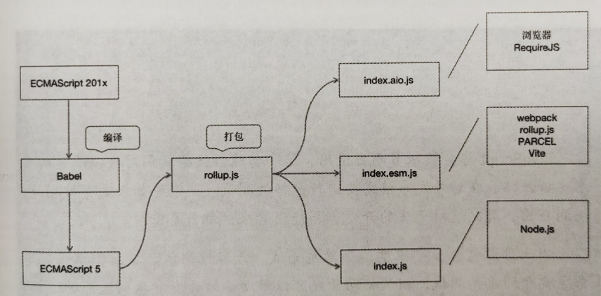

模块化解析
ECMAScript 2015 带来了原生的模块规范，而在此之前，JavaScript 并没有统一的模块规范。对于大型项目来说，模块是必不可少的，于是 JavaScript 社区进行了很多探索，其中有一些影响力较大的模块规范(如 AMD 和 CommonJS)，目前还在被广泛使用。
什么是模块
随着程序规模的扩大，以及引入各种第三方库，共享全局作用域会带来很多问题。首先是命名冲突问题，为了解决命名冲突问题，主流编程语言都提供了语言层面的方案，举例如下:
C 语言中的宏编译
C++语言中的命名空间
Python 语言中的模块
Java 语言中的包
PHP 语言中的命名空间
JavaScript 社区则选择了模块方案。一个合格的模块方案需要满足以下特性:
独立性 - 能够独立完成某个功能，隔绝外部环境的影响。
完整性 - 能够完成某个特定功能。
可依赖 - 可以依赖其他模块。
被依赖 - 可以被其他模块依赖。
简而言之，模块就是一个独立的空间，能引用其他模块，也能被其他模块引用。
原始模块
如果仅从定义层面来看，一个函数即可称为一个模块，而我们早就开始使用这种模块了。
function add(a, b) {
return a + b;
}
在 ECMAScript 2015 之前，只有函数能够创建作用域。
下面是 JavaScript 社区中原始模块的定义代码:
(function (mod, $) {
function clone(source) {
// 此处省略
}
})((window.clone = window.clone || {}), jQuery);
上面的 mod 模块不会被重复定义，依赖通过函数参数注入。这种实现其实并不完美，仍然需要手动维护依赖的顺序，典型的场景就是其中的 jQuery 必须先于代码被引用，否则会报告引用错误。随着模块数量的增加，这种问题很快会变得不可维护，这显然不是我们想要的。
一般的库都会提供对这种模块的支持，因为这种模块可以直接通过 script 标签引入，使用 script 标签引入库的方式依然存在使用场景，如古老的前端系统、简单的活动页面、简单的测试页面等。
AMD
AMD 是一种异步模块加载规范，专为浏览器端设计，其全称是 AsynchronousModule Definition，中文名称是异步模块定义。
AMD 规范中定义模块的方式如下:
define(id?, dependencies?, factory);
浏览器并不支持 AMD 模块，在浏览器端，需要借助 RequireJS 才能加载 AMD 模块。
RequireJS 是使用最广泛的 AMD 模块加载器，但目前的新系统基本不再使用 RequireJS，因为大部分库都会提供对 AMD 模块的支持
给深拷贝库添加对 AMD 模块的支持:
define(function () {
function clone(source) {
// 此处省略
}
return clone;
});
上面的代码定义了一个匿名 AMD 模块，假设代码位于 clone.js 文件中，那么在 index.js 文件中可以像下面代码这样使用上面代码定义的模块:
define(["clone"], function (clone) {
const a = { a: 1 };
const b = clone(a);
});
CommonJS
CommonJs 是一种同步模块加载规范，目前主要用于 Node.js 环境中。CommonJs 规范中定义模块的方式如下：
define(function (require, exports, module) {
//...
});
在 Node.js 中，外面的 define 包裹函数是系统自动生成的，不需要开发者自己书写。下面是深拷贝库支持 CommonJS 模块的示例代码:
function clone(source) {
// 此处省略
}
module.exports = clone;
在 Nodejs 环境下，假设上面的代码位于 clone.js 文件中，那么在 index.js 文件中可以像下面代码这样使用上面代码定义的模块:
const clone = require("./clone");
const a = { a: 1 };
const b = clone(a);
UMD
UMD 是一种通用模块加载规范，其全称是 Universal Module Definition，中文名称是通用模块定义。
UMD 想要解决的问题和其名称所传递的意思是一致的，它并不是一种新的规范，而是对前面介绍的 3 种模块规范 (原始模块、AMD、CommonJS)的一种整合。支持 UMD 规范的库可以在任何模块环境中工作。
(function (root, factory) {
var clone = factory(root);
if (typeof define === "function" && define.amd) {
// AMD
define("clone", function () {
return clone;
});
} else if (typeof exports === "object") {
// CommonJS
module.exports = clone;
} else {
// 原始模块
var _clone = root.clone;
clone.noConflict = function () {
if (root.clone === clone) {
root.clone = _clone;
}
return clone;
};
root.clone = clone;
}
})(this, function (root) {
function clone(source) {
// 此处省略
}
return clone;
});
由上述代码可以看到，UMD 规范只是对不同模块规范的简单整合，稍微不同的是，代码中给原始模块增加了 noConfict 方法，使用 noConfict 方法可以解决全局名称冲突的问题。
ES Module
ECMAScript 2015 带来了原生的模块系统 ES Module。目前，部分浏览器已经支持直接使用 ES Module，而不兼容的浏览器则可以通过构建工具来使用。
export function clone(source) {
// 此处省略
}
假设上面的代码位于 clone.js 文件中，那么在 index.js 文件中可以像下面代码这样引用 clone.js 文件中的 clone 函数:
import { clone } from "./clone";
const a = { a: 1 };
const b = clone(a);
介绍了多种前端模块，对于开源库来说，为了满足各种模块使用者的需求，需要对每种模块提供支持。开源库可以提供两个入口文件,
| 入口文件 | 支持的模块 |
|---|---|
| index.js | 原始模块、AMD 模块、CommonJS 模块、UMD 模块 |
| index.esm.js | ES Module |
技术体系解析
在开始之前先来看一个场景：深拷贝库中有一个 type 函数，用来获取数据的类型，现在假设还有一个库也要用到这个函数，所以我们决定将其单独抽象为一个库，现在就有了两个库，其中 clone 库会依赖 type 库
一般一个 JavaScript 库都会依赖另外一些库，真实的 JavaScript 库的依赖关系会更复杂
传统体系
在传统体系中，一般通过在 HTML 文件中使用 script 标签来引入 JavaScript 文件，这种体系下的每个库都需要提供一个 js 格式的文件。
在传统体系下，如果想使用一个库，就必须在使用之前手动引入要用到的库及其依赖的库。例如，如果想使用 clone 库，就必须在引入 clone 库之前先引入 type 库否则就会报错
随着库规模的扩大，将依赖关系交给库的使用者手动维护，对库的使用者非常不友好，因为要提供包含全部代码的入口文件，所以在这种体系下，大部分库都不会依赖很多其他的库。
兼容传统体系的库，需要将所有代码及其依赖的库的代码合并成一个文件。但也存在例外情况，例如，jQuery 插件必须依赖 jQuery 才能运行，React 插件必须依赖 React 才能运行，这种情况下可以将 jQuery 或 React 的引入交给插件的使用者来实现。
Node.js 体系
Nodejs 的模块系统遵守前面提到的 CommonJS 规范,Nodejs 有内置的依赖解析系统，如果要依赖一个模块，则可以像下面代码这样使用 require 系统函数直接引用文件:
const clone = require("./clone");
在使用 require 函数引用文件时，被引用文件的路径需遵循一套复杂的规则，引用支持相对路径、绝对路径和第三方包，如果忽略后缀，则会被当作 Nodejs 的模块去解析。
Node.js 模块目录下需要有一个 package.json 文件，用于定义模块的一些属性。如果想要新建模块，则可以使用 Nodejs 提供的 npm 工具快速初始化。通过下面的命令可以在 lib 目录下新建并初始化 clone 模块:
mkdir clone
cd clone
npm init
npm 会提示填写模块的信息，这里不做修改，一直保持默认设置即可，执行后会生成一个 packagejson 文件，该文件包含的字段如下:
{
"name": "clone",
"version": "1.0.0",
"description": "",
"main": "index.js",
"scripts": {
"test": "echo \"Error: no test specified\" && exit 1"
},
"author": "",
"license": "ISC"
}
这里主要关注 main 字段，其定义的是当前模块对应的逻辑入口文件，当该模块被其他模块引用时，Nodejs 会找到 main 字段对应的文件。
通过同样的操作完成对 type 模块的初始化。此时，项目的目录结构如下:
|- index.js
|- lib
|- clone
|- index.js
|- package.json
|- type
|- index.js
|- package.json
通过以下代码可以在 index.js 文件中直接引入 clone 模块，Node.js 会自动完成模块解析，并
const clone = require("./lib/clone");
在 Node.js 体系下，库只需要提供对 CommonJS 模块或 UMD 模块的支持即可，对依赖的库不需要进行特殊处理。
工具化体系
随着前端工程化的发展，前端构建工具目前已经成为中大型项目的标配。构建工具的典型代表是 webpack，webpack 支持 CommonJs 规范。
如果想要使用 webpack，则需要先安装 webpack，安装命令如下:
npm i webpack webpack-cli -D
在项目的根目录下添加 webpack.config.js 文件，并在该文件中添加如下配置代码，其含义是将当前目录下的 index.js 文件打包输出为 dist/index.js 文件。
const path = require("path");
module.exports = {
entry: "./index.js",
output: {
path: path.resolve(__dirname, "dist"),
filename: "index.js",
},
};
然后执行命令：
npx webpack
接下来，添加一个 index.html 文件，引用打包输出的 dist/index.js 文件即可。
最开始，构建工具仅支持 CommonJS 规范，随着 ECMAScript 2015 的发布，rollup.js 最先支持 ES Module，现在主流的构建工具均已支持 ES Module。
打包工具在加载一个库时，需要知道这个库是支持 CommonJS 模块的还是支持 ES Module 的，构建工具给的方案是扩展一个新的入口字段，开源库可以通过设定这个字段来标识自己是否支持 ES Module。
由于历史原因，这个字段有两个命名，分别 module 和 jsnext，目前比较主流的是 module 字段，也可以两个都设置，只需要在库的 package.json 文件中增加字段名 module 和 jsnext，并设置为 ES Module 文件的路径即。
{
"main": "index.js",
"module": "index.esm.js",
"jsnext": "index.esm.js"
}
在 webpack 中，可以通过配置 mainFields 来支持优先使用 module 字段，只需要在 webpack.confg.js 文件中添加如下的配置代码即可:
module.exports = {
// 其他配置
resolve: {
mainFields: ["module"],
},
};
index.js 文件提供对 CommonJS 模块的支持，
function clone(source) {
// 此处省略
}
module.exports = clone;
index.esm.js 文件提供对 ES Module 的支持，可以看到，支持 ES Module 的写法更加简洁。
export function clone(source) {
// 此处省略
}
对于库的使用者来说，不用关心 ES Module 规范和 CommonJS 规范之间的区别，只需要像下面代码这样引用即可：
const clone = require("clone");
打包工具会优先查看依赖的库是否支持 ES Module，如果不支持，则会遵循 CommonJS 规范。
综上所述，在这种体系下，开源库需要同时提供对 ES Module 和 CommonJS 模块的支持，对其依赖的库不需要进行特殊处理。
打包方案
前面介绍了在不同的模块规范和不同的前端技术体系下，库的适配原理。这部分内容细致又琐碎，使用手动适配的方式会相当麻烦，那么有没有更好的办法呢?
目前，比较好的办法就是使用打包工具自动完成打包工作。
| 浏览器（script/AMD/CMD） | 打包工具（webpack/rollup.js） | Node.js | |
|---|---|---|---|
| 入口文件 | index.aio.js | index.esm.js | index.js |
| 模块规范 | UMD | ES Module | CommonJS |
| 自身依赖 | 打包 | 打包 | 打包 |
| 第三方依赖 | 打包 | 不打包 | 不打包 |
选择打包工具
既然已经确定了目标，那么接下来就需要选择一款合适的打包工具。社区大多选择 webpack 和 rollup.js 作为库的打包工具,
webpack 是现在非常流行打包工具，而 rollup.js 则被称作下一代打包工具，推荐使用 rollup.js 作为库的打包工具
为什么不使用我们更熟悉的 webpack 呢？我们通过具体示例来对比 webpack 和 rollup.js。假设有两个文件: index.is 和 bar.js。
bar.js 文件对外暴露一个 bar 函数，代码如下:
export defualt function bar() {
console.log("bar");
}
index.js 文件引用 bar.js 文件
import bar from "./bar";
bar();
下面的代码是 webpack 打包输出的内容，index.js 和 bar.js 文件的内容在打包内容的最下面，起始处省略的 100 行代码其实是 webpack 生成的简易模块系统代码。webpack 方案的问题在于会生成很多冗余代码，这对于业务代码来说问题不大，但是对于库来说就不太友好了。
下面的代码是 rollup.js 打包输出的内容，可以看到模块完全消失了。那么 rollup.js 如何解决模块之间的依赖问题呢？对于打包的代码，rollup.js 巧妙地通过将被依赖的模块放在依赖模块前面的方法来解决模块依赖问题。对比 webpack 打包后的代码，rollup.js 的打包方案对于库的开发者来说是接近完美的方案。
打包步骤
首先安装 rollup.js，命令如下:
npm i --save-dev rollup@0.57.1
由于只在开发时才会用到 rollup.js，因此我们通过上面的参数 --save-dev 将其安装为开发时依赖，这样会将依赖添加到 package.json 文件的 devDependencies 字段中代码如下:
rollup.js 的使用方式和 webpack 的使用方式类似，需要通过配置文件告诉 rollup 如何打包。
| 打包输出文件 | 配置文件 | 技术体系 | 模块规范 |
|---|---|---|---|
| dist/index.js | rollup.config.js | Node.js | CommonJS |
| dist/index.esm.js | rollup.config.esm.js | webpack | ES Module |
| dist/index.aio.js | rollup.config.aio.js | 浏览器 | UMD |
接下来，先实现第 1 个配置文件 confg/rollup.confg.js
module.exports = {
input: "src/index.js",
output: {
file: "dist/index.js",
format: "cjs",
},
};
input 配置和 output 配置表示将 src/index.js 文件打包输出为 dist/index.js 文件，format 配置表明可以选择的模块方案，其值 cjs 的含义是输出模块遵循 CommonJS 规范。
接下来，运行下面的命令即可实现打包:
npx rollup -c config/rollup.config.js
打包成功后，打开 dist/index.js 文件，该文件中的内容如下:
"use strict";
Object.defineProperty(exports, "__esModule", {
value: true,
});
function clone(source) {
// 此处省略
}
exports.clone = clone;
接着实现第 2 个配置文件 config/rollup.confg.esm.js，示例代码如下。
其与实现第 1 个配置文件的代码基本类似，不同点是 format 配置的值，此处为 es，表示输出模块遵循 ES Module 规范。
module.exports = {
input: "src/index.js",
output: {
file: "dist/index.esm.js",
format: "es",
},
};
打包成功后，打开 dis/index.esm.js 文件，该文件中的内容如下:
function clone(source) {
// 此处省略
}
export { clone };
最后实现第 3 个配置文件 config/rollup.confg.aio.js，为了将依赖的库也打包进来，需要使用 rollup-plugin-node-resolve 插件，通过如下命令安装该插件:
npm i rollup-plugin-node-resolve -D
实现 config/rollup.config.aio.js 文件的完整代码如下，format 配置的值为 umd，表示输出模块遵循 UMD 规范，name 配置的值作为全局变量和 AMD 规范的模块名，plugins 配置使用 rollup-plugin-node-resolve 插件。
aio 是 all in one 的缩写，表示将全部模块规范和依赖都集成在一起。
var nodeResolve = require("rollup-plugin-node-resolve");
module.exports = {
input: "src/index.js",
output: {
file: "dist/index.aio.js",
format: "umd",
name: "clone",
},
plugins: [
nodeResolve({
main: true,
extensions: [".js"],
}),
],
};
打包成功后，打开 dist/index.aio.js 文件，该文件中的内容如下:
(function (global, factory) {
typeof exports === "object" && typeof module !== "undefined"
? factory(exports)
: typeof define === "function" && defined.amd
? define(["exports"], factory)
: factory((global.clone = {}));
})(this, function (exports) {
"use strict";
function type(data) {
// 此处省略
}
function clone(source) {
// 此处省略
}
exports.clone = clone;
Object.defineProperty(exports, "__esModule", { value: true });
});
每次都执行 rollup -c config/rollup.confg.js 命令有些烦琐，为了简化构建命令，同时收敛统一构建命令，可以使用 npm 提供的自定义 scripts 功能。在 package.json 文件中添加下面的代码:
{
"scripts": {
"build:self": "rollup -c config/rollup.config.js",
"build:esm": "rollup -c config/rollup.config.esm.js",
"build:aio": "rollup -c config/rollup.config.aio.js",
"build": "npm run build:self && npm run build:esm && npm run build:aio"
}
}
直接运行下面的命令就可以完成对所有方案的打包:
npm run build
由于现在入口文件位于 dist 目录下，因此需要修改 package.json 文件中相应的字段，指向 dist 目录下的构建文件。改动后的内容如下:
{
"main": "dist/index.js",
"jsnext:main": "dist/index.esm.js",
"module": "dist/index.esm.js"
}
添加 banner
一般开源库文件的顶部都会提供一些关于库的说明，如协议信息等，如
/**
* clone: 1.0.0
* License: MIT
*/
下面给我们的库添加统一的说明。现在用户使用的文件是自动构建出来的，无法手动添加，其实 rollup.js 支持添加统一的 banner 信息，
由于不同的配置文件需要同样的 banner，因此可以将 banner 信息统一放到 rollup.js 文件中
var pkg = require("./package.json");
var version = pkg.version;
var banner = `
/*!
* ${pkg.name} ${version}
* @license under MIT
*/
`;
exports.banner = banner;
然后修改配置文件，添加 banner 配置。以 rollup.config.esm.js 文件为例，修改后的代码如下:
var { banner } = require("./rollup.config");
module.exports = {
input: "src/index.js",
output: {
file: "dist/index.esm.js",
format: "es",
banner,
},
};
按需加载
很多时候，在使用一个库时可能只会用到其中的一小部分功能，但是却要加载整个库的内容，这对于 Node.js 来说问题不大，但对于浏览器端应用来说是不能接受的，好在 rollup.js 支持按需加载。
按需加载分为两种情况:
第一种情况是，我们的库要用到另一个库的功能，但只用到其中一小部分功能如果将其全部打包过来，则会让打包体积变大，此时通过 rollup.js 提供的 treeshaking 功能可以自动屏蔽未被使用的功能。
例如，假设 index.js 文件只使用了第三方包 is.js 中的一个 isString 函数，当不使用 treeshaking 功能时，会将 is.js 中的函数全部引用进来
而在使用了 treeshaking 功能后，则可以屏蔽 is.js 中的其他函数，仅引用 isString 函数
第二种情况是，要让使用库的项目能够按需加载。一个库如果不进行任何配置，那么现代打包工具是不会使用 treeshaking 功能对其进行优化的，因为打包工具无法知道一个库是否有副作用。假如我们的库中有如下代码，如果引用了该库，就会向 window 下写入一个变量，打包工具如果把这段代码屏蔽，则可能产生 Bug。
window.aaa = 1;
如果我们的库没有副作用，则可以向 package.json 文件中添加 sideEffects 字段，这样打包工具就能够使用 treeshaking 功能进行优化了。
{
"sideEffects": false
}
至此，库打包的全部工作就完成了。
兼容方案
当我们的库被用到生产环境时，由于真实用户的浏览器环境不可控，因此会在库用到一些新的语言特性时产生报错。
例如，库代码中使用了 ECMAScript 2015 中新的变量声明关键字 const，此时如果用户使用正 IE9 浏览器，则会产生一个语法错误。
由于 JavaScript 的错误是中断式的。因此会导致整个页面失去响应，这显然是不能接受的。
确定兼容环境
想要解决上述问题，需要库的开发者给出关于库的兼容性的明确说明，这样库的使用者可以根据自己的需求挑选适合的库。对于 JavaScript 库来说，兼容性越好，其使用范围就越广泛，同时意味着付出的成本会越高。所以，库的开发者需要权衡利弊，做一个折中的选择。
那么，都有哪些环境需要兼容呢？目前，需要兼容的环境主要包括浏览器和 Node.js，statcounter 是一款统计全球浏览器市场份额的工具，提供了详细的数据，可以帮助库的开发者确定要兼容的环境。对于国内浏览器市场份额数据，可以查看百度流量研究院发布的数据。
需要兼容的自主内核浏览器主要包括 Chrome、Firefox、IE、Edge 和 Safari。移动端浏览器的情况会更加复杂，但是兼容性和桌面端相比已经非常好了。对于 JavaScript 来说，以桌面端浏览器的兼容性为标准即可。
Node.js 的兼容性情况会好很多，可以参考官方提供的 metrics 数据，包括不同版本的下载数据，
不同的库可以选择更宽泛或更严格的兼容性要求，但请进行严格测试，并明确告知库的使用者。如果是为某些特殊场景服务的库，比如与 Canvas 相关的库，那么其兼容性与 Canvas 对齐即可。
ECMAScript 5 兼容方案
如何知道自己编写的代码是否存在兼容性问题呢？原来解决此类问题都是依靠开发者的经验，掌握前端常用的特性在不同浏览器上的兼容性情况，是评判一个前端开发者的经验是否丰富的指标之一，如是否知道 IE8 浏览器上缺少 Anray.prototype.indexOf 方法。
当遇到不熟悉的语法或方法时，可以在 MDN 网站上查看语法或方法的详细兼容性信息。
除了 MDN，还可以通过 caniuse 网站查询更详细的兼容性信息。
下面我们来系统分析目前 JavaScript 语言不同特性的兼容性情况。大体来说，JavaScript 语言可以分为 ECMAScript 5 之前的版本、ECMAScript 5 和 ECMAScript 5 之后的版本，ECMAScript 5 之前的特性是非常安全的。
使用 ECMAScript 5 及之后的版本可能存在兼容性问题，compat-table 网站记录了 JavaScript 语言不同版本的兼容性情况。可以看到，只有 IE8 浏览器上存在兼容性问题。
ECMAScript 2015 兼容方案
目前，ECMAScript 2015 及后续版本的兼容性情况还不容乐观，不过每一个 ECMAScript 2015 的特性都可以用 ECMAScript 5 实现，最简单的方法就是直接使用 ECMAScript5 来实现库代码。
但是这种依赖于经验的手动方式效率低下，为此，JavaScript 社区提供了更好的方案，即通过转换器将 ECMAScript 2015 代码自动编译为 ECMAScript 5 代码。
常用的 ECMAScript 2015 转换工具是 Babel，下面给我们的库添加 Babel。首先需要安装 Babel，由于已经使用了 rollup.js，因此还需要安装对应的 rollup.js 插件。
npm i --save-dev rollup-plugin-babel @babel/core @babel/preset-env
Babel 为每个 ECMAScript 2015 的特性都提供了一个插件，这样可以让开发者自己选择要转换哪些属性。手动维护需要转换的特性是比较烦琐的，这里推荐使用 Babel 的 preset-env 插件，使用 preset-env 插件，只要简单配置需要兼容的环境即可。
preset-env 插件会自动帮助开发者选择相应的插件。在 rollup.js 中使用 Babel 需要配置 plugins，由于 3 个文件都需要配置，因此将其提取到 rollup.js 文件中，
// rollup.js
function getCompiler(opt) {
return babel({
babelrc: false,
presets: [
{
"@babel/preset-env",
{
targets: {
browsers:
"last 2 versions, > 1%, ie >= 8, Chrome >= 45, safari >= 10",
},
node: "0.12"
},
modeuls: false,
loose: true // 松散模式
}
],
exclude: "node_modules/**"
});
}
exports.getCompiler = getCompiler;
这里不使用独立的 Babel 配置文件，所以将 babelrc 和 modules 都设置为 false; loose 代表松散模式，将 loose 设置为 true 能够更好地兼容 IE 8 浏览器。
使用下面的命令可以查看 targets 配置对应的浏览器列表:
npx browserslist "last 2 versions, > 1%, ie >= 8, Chrome >= 45, safari >= 10"
如下：
chrome 132
# ...
edge 130
firefox 134
firefox 133
ie 11
ie 10
ie 9
ie 8
ie_mob 11
ie_mob 10
ios_saf 18.2
ios_saf 18.1
ios_saf 17.6-17.7
kaios 3.0-3.1
kaios 2.5
op_mini all
op_mob 80
opera 114
opera 113
safari 18.2
safari 18.1
safari 18.0
#...
samsung 27
samsung 26
接下来，分别在 3 个配置文件中添加如下的配置代码:
var common = require("./rollup.js");
module.exports = {
plugins: [common.getCompiler()],
};
现在我们已经解决了 ECMAScript 2015 新语法的兼容性问题，但是如果用到了 ECMAScript 2015 的 API，还是会存在兼容性问题，平时我们在自己的项目中可以引入全局的 polyfill 解决这个问题，但对于库来说这种方法并不友好，会污染全局环境这对于库来说是难以接受的。
core-js 是一个 ECMAScript2015+ 的 polyfill 库，提供了不污染全局环境的使用方式。首先需要安装 core-js，安装命令如下:
npm i core-js --save
如果想使用 ECMAScript 2015 的 Array.from 功能，可以通过下面的示例代码引入一个本地函数 from，这样不会污染全局环境中的 Array.from 函数。
import from from "core-js-pure/features/array/from";
from("abc"); // ['a', 'b', 'c']
如果还想使用其他的 API，则只需要分别引入即可，不过这种方式虽然能够解决问题，但是需要手动引入依赖。而 Babel 集成了 core-js，可以通过编译自动将我们用到的 API 转换为上面的 core-js 方式。要使用这个功能，首先需要安装两个插件。
npm i @babel/plugin-transform-runtime --save-dev
npm i @babel/runtime-corejs2 --save
然后修改 rollup.js 文件中的 Babel 配置，
{
plugins: [
[
"@babel/plugin-transform-runtime",
{
corejs: 2,
},
],
];
}
现在直接在源代码中使用 Array.from 函数，
Array.from("abc"); // ['a', 'b', 'c']
重新构建，编译完成后的代码如下，可以看到 Array.from 函数被替换了，编译结果和上面手动使用 core-js 的结果一样。
import _Array$from from "@babel/runtime-corejs2/core-js/array/from";
_Array$from("abc"); // ['a', 'b', 'c']
至此，我们就可以使用 ECMAScript 2015+ 的新语法和 API 了，通过编译将 ECMAScript 2015+ 代码转换为 ECMAScript5 代码,
